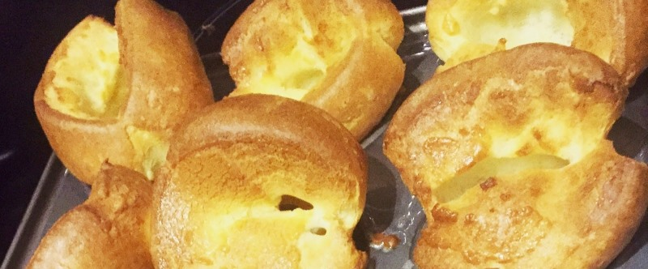

приготовление:
-
Разогреть духовку до 190 °C. Равномерно распределить подсолнечное масло по ячейкам формы, чтобы оно покрывало дно каждой. Поставить форму в духовку на 15 минут, чтобы масло разогрелось.
-
Пока масло разогревается, взбить венчиком 4 яйца. Добавить 200 мл молока, 200 г муки и щепотку соли. Перемешать венчиком до однородности и перелить тесто в ёмкость с носиком.
-
Аккуратно достать горячую форму и разлить тесто по ячейкам почти до краёв. Сразу вернуть форму в духовку и выпекать 20–25 минут. До конца выпечки дверцу духовки держать закрытой.